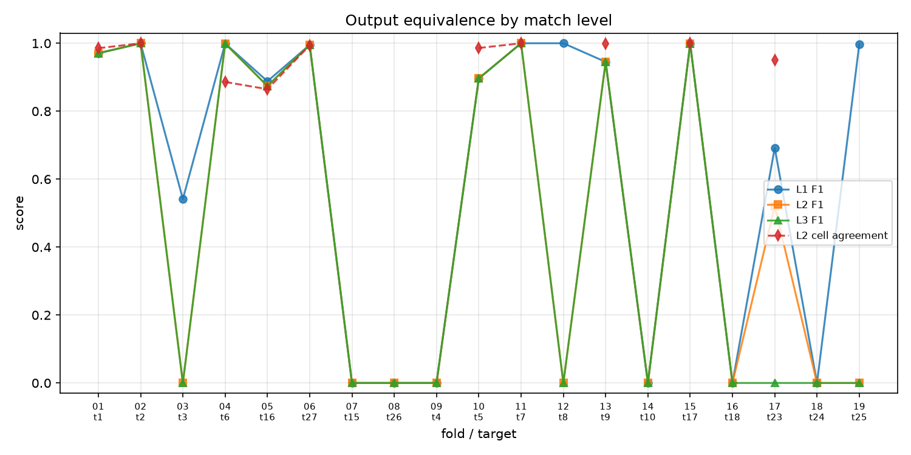
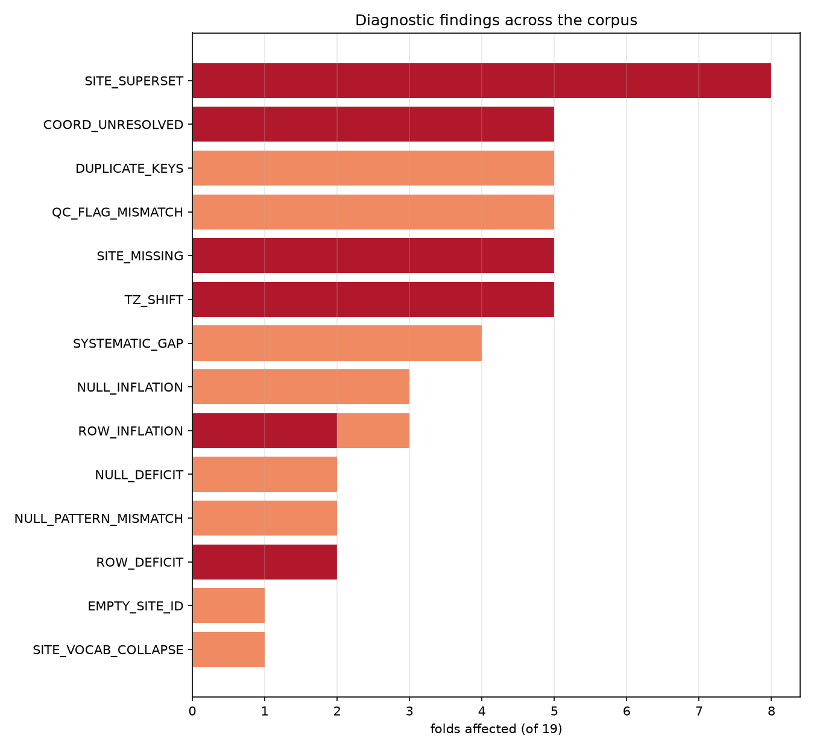

Methods and results
19 leave-one-out folds scored against the BERDL lakehouse reference.
Every metric specified, then reported.
Definitions: docs/evaluation_metrics.md ·
Code: src/metrics/ · Data: results/
1 · Design
Each fold hides one dataset from the agent's reference material, gives it that dataset's raw files, and asks it to harmonize them. We compare the output against the expert's harmonized version of the same dataset.
| Table | bervodata.watershed_sfa_ |
| Rows | 6,424,075 |
| Datasets | 19 (1:1 with fold targets) |
| Schema | 8 harmonized columns |
| Runs | 19, all completed |
| Source | main@ba049e7 |
| Scored | 19 / 19, 0 failures |
| Cost | $101.90 total |
| Issue | Translation | If skipped |
|---|---|---|
| Water potential stored in pascals; schema is kPa | / 1000 | silent 1000× error |
site_id is not a column — embedded as <dataset>__<site> | join sdt_location.site_identifier | no site comparison at all |
Dataset IDs use _ in repo, - in lakehouse | normalise separators | 0 of 19 datasets match |
2 · Primary metric
Matching rows on (timestamp, site, depth, replicate) alone is
misleading: a site-naming difference or a uniform clock offset sends the score to zero while
every value is correct. Four levels are computed and all four reported.
| Level | Join key | Isolates | Degenerate when |
|---|---|---|---|
| L0 | none — distributions only | unit errors, row-count errors | never |
| L1 | datetime + depth + replicate | value accuracy, site naming set aside | clock offset |
| L2 | L1 + site, after reference→agent name crosswalk | site identity modulo vocabulary | crosswalk fails |
| L3 | datetime + site + depth + replicate | strict headline | any naming or clock difference |
precision = matched / n_agent,
recall = matched / n_gold, F1, and cell agreement over paired rows
(numeric within rtol 1e-5 / atol 1e-8; text exact).2 · Primary metric
| Level | Precision | Recall | F1 | Cell agreement | n folds w/ cells |
|---|---|---|---|---|---|
| L1 | 0.896 [0.000–0.997] | 0.998 [0.000–1.000] | 0.897 [0.000–0.998] | 0.847 [0.800–0.992] | 13 |
| L2 | 0.398 [0.000–0.968] | 0.751 [0.000–0.999] | 0.520 [0.000–0.983] | 0.990 [0.959–1.000] | 10 |
| L3 | 0.000 [0.000–0.968] | 0.000 [0.000–0.999] | 0.000 [0.000–0.983] | 0.994 [0.985–1.000] | 9 |
| Band | Folds |
|---|---|
| exactly 1.000 | 3 |
| 0.95 – 0.999 | 3 |
| 0.50 – 0.95 | 3 |
| 0 – 0.50 | 0 |
| exactly 0 | 10 |
Bimodal: folds either match well or fail completely. Nothing lands between 0 and 0.5 — consistent with single systematic defects rather than diffuse error.
| Band | Folds |
|---|---|
| exactly 1.000 | 6 |
| within ±5% | 12 |
| >1.05 (inflated) | 5 |
| <0.95 (deficit) | 2 |
| identity (names already equal) | 10 |
| exact subset match | 4 |
| suffix stripped | 1 |
| no correspondence found | 4 |
Reading: cell agreement rises as the join tightens (0.847 → 0.990 → 0.994) because stricter keys pair genuinely corresponding rows. The rows that do pair are nearly always right; the difficulty is getting rows to pair at all.
2 · Primary metric
Analysed by hand before the scorer existed; now the known-answer regression test.
| Level | Matched rows | Precision | Recall | F1 | Cell agreement |
|---|---|---|---|---|---|
| L1 — site-blind | 912,371 | 0.530 | 0.9999 | 0.693 | 0.620 |
| L2 — crosswalked | 684,908 | 0.398 | 0.751 | 0.520 | 0.951 |
| L3 — strict | 0 | 0.000 | 0.000 | 0.000 | — |
Agent emitted 1,722,752 rows against the reference's 912,417 (1.888×), with 20 sites against 15.
| Defect | Evidence | Effect on ladder |
|---|---|---|
| Site vocabulary collapsed | reference ER-WML1_HERB / _SHRUB; agent ER-WML1 | L3 → 0, L2 recovers |
| Row filter missed | 10 extra sites = even-numbered warming plots; 1.89× rows | L1 precision 0.530 ≈ 1/1.888 |
| Coordinates not resolved | all sites blank, flagged g2; reference resolves 10 | location metrics only |
L1 recall 0.9999 says the agent got essentially every timestamp, depth and replicate right; post-crosswalk 95.1% of values agree. A single strict score reports "0" for all three indistinguishably.
Part 3
A score says a fold is wrong. A diagnosis says how.
3 · Diagnostics
Each detector emits {code, severity, evidence, message}.
Findings state evidence, not conclusions — "ten sites appear that the
reference lacks" is an observation; "the agent forgot a filter" is a hypothesis to be
checked against the expert's documented steps.
| Code | Trigger condition | Severity |
|---|---|---|
TZ_SHIFT | uniform whole-hour offset recovering >50% of timestamps, from a baseline <50% | critical |
ROW_INFLATION / ROW_DEFICIT | |log(ratio)| beyond ±5%; critical past ±25% | critical / major |
SITE_SUPERSET | agent sites with no reference counterpart | critical |
SITE_MISSING | reference sites absent from agent output | critical |
SITE_VOCAB_COLLAPSE | reference names extend agent names by a separator + qualifier | major |
COORD_UNRESOLVED | agent emits 0 coordinates where reference resolves ≥1 | critical |
QC_FLAG_MISMATCH | provenance flag accuracy < 0.5 | major |
UNIT_SCALE | median ratio within 5% of 100, 1000, 101.325 or reciprocals | critical |
SIGN_ERROR | water potential >0 where reference ≤0 | critical |
NULL_INFLATION / NULL_DEFICIT | null-rate difference >10 percentage points | major |
NULL_PATTERN_MISMATCH | null-mask agreement <0.95 on paired rows | major |
DUPLICATE_KEYS | agent duplicates a natural key more than the reference does | major |
EMPTY_SITE_ID | any row with blank site_id | major |
SYSTEMATIC_GAP | >80% of unmatched reference rows in one site | major |
3 · Diagnostics
| Code | Sev. | Folds |
|---|---|---|
SITE_SUPERSET | crit | 8 |
COORD_UNRESOLVED | crit | 5 |
SITE_MISSING | crit | 5 |
TZ_SHIFT | crit | 5 |
QC_FLAG_MISMATCH | maj | 5 |
DUPLICATE_KEYS | maj | 5 |
SYSTEMATIC_GAP | maj | 4 |
ROW_INFLATION | crit/maj | 5 |
ROW_DEFICIT | crit | 2 |
NULL_INFLATION | maj | 3 |
NULL_DEFICIT | maj | 2 |
NULL_PATTERN_MISMATCH | maj | 2 |
EMPTY_SITE_ID | maj | 1 |
SITE_VOCAB_COLLAPSE | maj | 1 |
UNIT_SCALE | crit | 0 |
SIGN_ERROR | crit | 0 |
findings total
folds with no critical finding
unit-scale errors
sign errors
The failures are structural, not numerical. Almost every finding concerns which rows and which sites — filters, naming, coordinates, timezones. The arithmetic of unit conversion is solved; record-selection logic is not.
That determines where to intervene: the skill's unit guidance is working, its exclusion-criteria guidance is not.
3 · Diagnostics
| Fold | Target | Offset | L1 recall | L3 F1 | L3 F1 corrected | Δ |
|---|---|---|---|---|---|---|
| 8 | 26 | +7 h | 0.000 | 0.000 | 0.839 | +0.839 |
| 9 | 4 | −6 h | 0.000 | 0.000 | 0.645 | +0.645 |
| 18 | 24 | +6 h | 0.000 | 0.000 | 0.764 | +0.764 |
| 14 | 10 | +1 h | 0.000 | 0.000 | 0.000 | 0 |
| 16 | 18 | −7 h | 0.000 | 0.000 | 0.000 | 0 |
| Agent | Reference | |
|---|---|---|
| Rows | 3,204 | 3,204 |
| Distinct timestamps | 534 | 534 |
| Timestamp overlap | 0 | |
| Depths, replicates, values | identical | |
Agent 2022-06-16 06:00:00+00:00 ·
reference 2022-06-16 00:00:00+00:00
Median L3 F1
after removing detected offsets
Folds 14 and 16 stay at zero, so their problems extend beyond the clock — the correction identifies which failures are only a timezone and which are not.
4 · Schema conformance
TargetSchema.is_valid() ignores
range violations — a VWC of 95 passes it. Ranges count toward the verdict here.fully conformant
uncoercible values, whole corpus
range violations
Every emitted value parses as its intended type and sits in range. The five non-conformant folds fail structurally — a missing or extra column, or an unpopulated required field — not through malformed data.
5 · Sites and coordinates
qc_flag accuracy.qc_flag column, but
sdt_location.geolocation_resolution_method records how each coordinate
was obtained. Mapping that 10-value vocabulary onto g1 (from registry) and
g2 (unavailable) makes provenance scoreable.| Fold | Site F1 | Ref sites w/ coords | Agent rows w/ coords | Median coord error (m) | qc_flag acc. |
|---|---|---|---|---|---|
| 1 | 1.000 | 9 | 9 | 0.0 | 1.000 |
| 2 | 1.000 | 4 | 4 | 0.0 | 1.000 |
| 3 | 0.000 | 1 | 2 | — | — |
| 4 | 1.000 | 4 | 4 | 0.0 | 1.000 |
| 5 | 1.000 | 8 | 8 | 0.0 | 1.000 |
| 6 | 1.000 | 4 | 0 | — | 0.000 |
| 7 | 1.000 | 101 | 101 | 0.0 | 1.000 |
| 8 | 0.996 | 416 | 0 | — | 0.000 |
| 9 | 0.857 | 3 | 4 | 0.0 | 1.000 |
| 10 | 1.000 | 26 | 0 | — | 0.212 |
| 11 | 1.000 | 1 | 1 | 0.0 | 1.000 |
| 12 | 0.000 | 1 | 1 | — | — |
| 13 | 1.000 | 375 | 375 | 0.0 | 1.000 |
| 14 | 1.000 | 3 | 0 | — | 0.000 |
| 15 | 0.909 | 6 | 5 | 0.0 | 1.000 |
| 16 | 0.000 | 23 | 46 | — | — |
| 17 | 0.444 | 10 | 0 | — | 0.000 |
| 18 | 1.000 | 2 | 2 | 0.0 | 1.000 |
| 19 | 0.000 | 2 | 2 | — | — |
When the agent attempts coordinates it is exact — 10 folds comparable, median error 0.0 m, all within 100 m, qc_flag median 1.000. The failure is not attempting: 5 folds report coordinates unavailable that the registry resolves. That is a lookup-not-performed problem, not an accuracy problem.
6 · Documentation
Exact text matching is worthless here — the earlier pilot found 0/8 agreement on wording while the executed outputs were identical. "Does the text describe the same operations?" is answerable.
unit_conversion — not prose(factor, from_unit, to_unit) and scored exactly. No judgement.transformation — step extractionJOIN, FILTER,
RENAME, TIMEZONE, PARSE_DATETIME,
RESHAPE_WIDE_LONG, ASSIGN_CONSTANT, …). Lexical, applied
identically to both sides so extraction bias is symmetric.depth group upstream,
so group-wise comparison would miss it.FILTER appears twice in 153 reference patterns yet drives the largest output
errors; any frequency-weighted average makes it invisible. Small cells reported as counts,
never percentages.notes.md; precision stays
attributed per artifact.6 · Documentation
| Operation | Stated / required |
|---|---|
TIMEZONE | 18 / 19 |
ASSIGN_CONSTANT | 14 / 15 |
PARSE_DATETIME | 14 / 16 |
PARSE_FROM_COLNAME | 11 / 12 |
METADATA_LOOKUP | 5 / 5 |
RESHAPE_WIDE_LONG | 2 / 2 |
DERIVE_MIDPOINT | 2 / 2 |
FILTER | 1 / 1 |
JOIN | 1 / 1 |
RENAME | 4 / 9 |
AGGREGATE | 0 / 1 |
| Total | 72 / 83 |
FILTER and JOIN are case reports (n=1),
not rates.
| Field | Median F1 | n |
|---|---|---|
data_payload_files | 1.000 | 19 |
location_metadata_files | 1.000 | 14 |
Source-file identification is perfect — the agent reliably works out which files to read.
Saying it is not doing it.
The agent documents timezone handling in 18 of 19 folds — and still gets the timezone wrong in 5. These are execution failures, not knowledge failures, which points the fix at the code path rather than the instructions.
7 · Context
These describe how a run happened. A cheap run that silently skips a filter would otherwise look efficient, so none of these is scored as quality.
| Measure | Median [IQR] | Range |
|---|---|---|
| Cost (USD) | 4.69 [4.38–5.65] | 3.56–13.57 |
| Turns | 80 [74–91] | 67–123 |
| Exemplars read | 3 [3–4] | 1–5 |
| Process integrity | 19/19 clean | |
Integrity is a gate, not a score — at 19/19 it has no power to discriminate between runs.
| Cluster | Pool | Folds | Median L3 F1 |
|---|---|---|---|
sg_ph_micromet | 13 | 6 | 0.983 |
neon_point | 17 | 2 | 0.000 |
independent | 18 | 11 | 0.000 |
The agent does visibly compensate for ablation: with all six cluster-mates withheld, fold 1 grepped the exemplar directory and opened four out-of-cluster implementations instead. The mechanism is observable even where the outcome contrast is not.
8 · Interpretation
| Limit | Consequence |
|---|---|
| Folds are not independent. Six of 19 are the same micrometeorology cluster. | n=19 overstates the evidence; the pre-registered cluster bootstrap resamples only 3 units. |
| No error bars. Every fold is a single run; two accidental repeats differed by 3.9% of rows. | Per-fold scores are point estimates of unknown precision. Fold-to-fold differences below ~4% are not interpretable. |
| Ablation is confounded with dataset type and difficulty. | Exploratory only; not a finding. |
| One expert, not ground truth. | Disagreement means divergence from that expert's conventions. |
| Prose scoring is lexical. | Recall is a lower bound; an LLM reader would find more, once validated. |
| Coverage is uneven. Gravimetric water content is non-null in 416 of 6.4M reference rows. | Its perfect agreement is vacuous and must not be reported as a capability. |
Accordingly: per-fold detail and effect sizes rather than p-values, and any composite shown beside its components rather than instead of them.
9 · Actions
| Action | Folds affected | Rationale |
|---|---|---|
| Fix timezone handling | 5 | Highest-yield single fix; median L3 F1 0.00 → 0.84. Documentation shows the agent already knows it should. |
| Make exclusion criteria explicit in the skill | 8 | Rows the expert filters out are retained. Instructions cover schema and units well, exclusion poorly. |
| Make the registry lookup mandatory | 5 | Coordinates reported unavailable that the registry resolves — and where the agent looks, it is exact. |
| State a site-naming convention | 5 | Several folds differ only in site labels; cheap to specify, currently costs full credit. |
| Run a repeat batch | — | Until then no score has an error bar and the ablation contrast cannot be read. |
Reproduce: python -m src.metrics.run_all then
python -m src.metrics.report
Appendix
Appendix A
| Fold | Tgt | Cluster | Pool | Ref rows | Row ratio | TZ | L1 R | L2 cells | L3 F1 | L3 corr. | Crosswalk | Crit | $ |
|---|---|---|---|---|---|---|---|---|---|---|---|---|---|
| 1 | 1 | sg_ph_micromet | 13 | 1,253,839 | 1.058 | — | 0.999 | 0.985 | 0.971 | 0.971 | identity | 0 | 5.14 |
| 2 | 2 | sg_ph_micromet | 13 | 154,242 | 1.000 | — | 1.000 | 1.000 | 1.000 | 1.000 | identity | 0 | 4.27 |
| 3 | 3 | sg_ph_micromet | 13 | 139,770 | 0.688 | — | 0.457 | — | 0.000 | 0.000 | none | 3 | 6.22 |
| 4 | 6 | sg_ph_micromet | 13 | 618,408 | 1.000 | — | 0.999 | 0.886 | 0.999 | 0.999 | identity | 0 | 4.33 |
| 5 | 16 | sg_ph_micromet | 13 | 226,080 | 1.152 | — | 0.956 | 0.865 | 0.874 | 0.874 | identity | 0 | 6.04 |
| 6 | 27 | sg_ph_micromet | 13 | 195,524 | 1.008 | — | 0.999 | 0.994 | 0.995 | 0.995 | identity | 1 | 4.57 |
| 7 | 15 | neon_point | 17 | 552 | 0.953 | — | 0.000 | — | 0.000 | 0.000 | exact | 1 | 5.29 |
| 8 | 26 | neon_point | 17 | 1,089,621 | 0.725 | +7 | 0.000 | 1.000 | 0.000 | 0.839 | exact | 4 | 13.57 |
| 9 | 4 | independent | 18 | 309 | 1.813 | −6 | 0.000 | 1.000 | 0.000 | 0.645 | exact | 3 | 4.69 |
| 10 | 5 | independent | 18 | 471,893 | 1.000 | — | 0.897 | 0.986 | 0.897 | 0.897 | identity | 1 | 4.44 |
| 11 | 7 | independent | 18 | 586 | 1.000 | — | 1.000 | 1.000 | 1.000 | 1.000 | identity | 0 | 3.56 |
| 12 | 8 | independent | 18 | 300 | 1.000 | — | 1.000 | — | 0.000 | 0.000 | none | 2 | 4.94 |
| 13 | 9 | independent | 18 | 672 | 1.116 | — | 1.000 | 1.000 | 0.945 | 0.945 | exact | 1 | 3.91 |
| 14 | 10 | independent | 18 | 3,204 | 0.987 | +1 | 0.000 | — | 0.000 | 0.000 | identity | 2 | 4.55 |
| 15 | 17 | independent | 18 | 56,861 | 0.998 | — | 0.998 | 1.000 | 0.999 | 0.999 | identity | 0 | 4.82 |
| 16 | 18 | independent | 18 | 48,708 | 0.990 | −7 | 0.000 | — | 0.000 | 0.000 | none | 3 | 6.85 |
| 17 | 23 | independent | 18 | 912,417 | 1.888 | — | 1.000 | 0.951 | 0.000 | 0.000 | suffix_stripped | 3 | 6.01 |
| 18 | 24 | independent | 18 | 420 | 1.000 | +6 | 0.000 | 1.000 | 0.000 | 0.764 | identity | 1 | 4.23 |
| 19 | 25 | independent | 18 | 471,893 | 1.005 | — | 1.000 | — | 0.000 | 0.000 | none | 2 | 4.47 |
Pool = exemplar datasets available. TZ = detected uniform offset (hours).
L1 R = L1 recall. Crit = critical findings. Source: results/tables/per_fold.csv.
Appendix B
| Fold | Tgt | Severity | Code | Message |
|---|---|---|---|---|
| 1 | 1 | major | ROW_INFLATION | agent emitted 1.06× the reference row count (more rows) |
| 1 | 1 | major | DUPLICATE_KEYS | 72,852 agent rows duplicate the natural key (reference has 0) |
| 1 | 1 | major | NULL_PATTERN_MISMATCH | water_potential_kPa null positions disagree on 5.8% of paired rows |
| 1 | 1 | major | SYSTEMATIC_GAP | 100% of unmatched reference rows fall in a single site |
| 2 | 2 | major | DUPLICATE_KEYS | 54 agent rows duplicate the natural key (reference has 0) |
| 3 | 3 | critical | ROW_DEFICIT | agent emitted 0.688× the reference row count (fewer rows) |
| 3 | 3 | critical | SITE_SUPERSET | 2 sites present in the agent output have no reference counterpart |
| 3 | 3 | critical | SITE_MISSING | 1 reference site absent from the agent output |
| 3 | 3 | major | NULL_DEFICIT | water_potential_kPa populated in agent (0.0% null) where reference is 23.8% null |
| 3 | 3 | major | SYSTEMATIC_GAP | 100% of unmatched reference rows fall in a single site |
| 5 | 16 | major | ROW_INFLATION | agent emitted 1.15× the reference row count (more rows) |
| 5 | 16 | major | NULL_INFLATION | volumetric_water_content null in 18.6% of agent rows vs 6.1% of reference |
| 5 | 16 | major | DUPLICATE_KEYS | 264,810 agent rows duplicate the natural key (reference has 0) |
| 5 | 16 | major | NULL_PATTERN_MISMATCH | water_potential_kPa null positions disagree on 22.5% of paired rows |
| 6 | 27 | critical | COORD_UNRESOLVED | agent emitted no coordinates; reference resolves 4 sites |
| 6 | 27 | major | DUPLICATE_KEYS | 397 agent rows duplicate the natural key (reference has 0) |
| 6 | 27 | major | QC_FLAG_MISMATCH | qc_flag disagrees on 100% of 4 compared sites |
| 7 | 15 | critical | SITE_SUPERSET | 1 site present in the agent output has no reference counterpart |
| 8 | 26 | critical | ROW_DEFICIT | agent emitted 0.725× the reference row count (fewer rows) |
| 8 | 26 | critical | TZ_SHIFT | every timestamp offset by +7 h; correcting raises L3 F1 to 0.839 |
| 8 | 26 | critical | SITE_MISSING | 3 reference sites absent from the agent output |
| 8 | 26 | critical | COORD_UNRESOLVED | agent emitted no coordinates; reference resolves 416 sites |
| 8 | 26 | major | NULL_DEFICIT | volumetric_water_content populated in agent (0.0% null) where reference is 27.5% null |
| 8 | 26 | major | QC_FLAG_MISMATCH | qc_flag disagrees on 100% of 425 compared sites |
| 9 | 4 | critical | ROW_INFLATION | agent emitted 1.81× the reference row count (more rows) |
| 9 | 4 | critical | TZ_SHIFT | every timestamp offset by −6 h; correcting raises L3 F1 to 0.645 |
| 9 | 4 | critical | SITE_SUPERSET | 1 site present in the agent output has no reference counterpart |
| 10 | 5 | critical | COORD_UNRESOLVED | agent emitted no coordinates; reference resolves 26 sites |
| 10 | 5 | major | QC_FLAG_MISMATCH | qc_flag disagrees on 79% of 33 compared sites |
| 12 | 8 | critical | SITE_SUPERSET | 1 site present in the agent output has no reference counterpart |
| 12 | 8 | critical | SITE_MISSING | 1 reference site absent from the agent output |
| 12 | 8 | major | SYSTEMATIC_GAP | 100% of unmatched reference rows fall in a single site |
| 13 | 9 | critical | SITE_SUPERSET | 20 sites present in the agent output have no reference counterpart |
| 13 | 9 | major | ROW_INFLATION | agent emitted 1.12× the reference row count (more rows) |
| 13 | 9 | major | NULL_INFLATION | volumetric_water_content null in 10.4% of agent rows vs 0.0% of reference |
| 14 | 10 | critical | TZ_SHIFT | every timestamp offset by +1 h; correcting raises L3 F1 to 0.000 |
| 14 | 10 | critical | COORD_UNRESOLVED | agent emitted no coordinates; reference resolves 3 sites |
| 14 | 10 | major | NULL_INFLATION | depth_m null in 100.0% of agent rows vs 0.0% of reference |
| 14 | 10 | major | QC_FLAG_MISMATCH | qc_flag disagrees on 100% of 3 compared sites |
| 15 | 17 | major | SYSTEMATIC_GAP | 100% of unmatched reference rows fall in a single site |
| 16 | 18 | critical | TZ_SHIFT | every timestamp offset by −7 h; correcting raises L3 F1 to 0.000 |
| 16 | 18 | critical | SITE_SUPERSET | 20 sites present in the agent output have no reference counterpart |
| 16 | 18 | critical | SITE_MISSING | 20 reference sites absent from the agent output |
| 17 | 23 | critical | ROW_INFLATION | agent emitted 1.89× the reference row count (more rows) |
| 17 | 23 | critical | SITE_SUPERSET | 10 sites present in the agent output have no reference counterpart |
| 17 | 23 | critical | COORD_UNRESOLVED | agent emitted no coordinates; reference resolves 10 sites |
| 17 | 23 | major | SITE_VOCAB_COLLAPSE | reference site names extend the agent's with a qualifier it did not emit |
| 17 | 23 | major | EMPTY_SITE_ID | 36 agent rows have an empty site_id (a required field) |
| 17 | 23 | major | QC_FLAG_MISMATCH | qc_flag disagrees on 100% of 10 compared sites |
| 18 | 24 | critical | TZ_SHIFT | every timestamp offset by +6 h; correcting raises L3 F1 to 0.764 |
| 19 | 25 | critical | SITE_SUPERSET | 2 sites present in the agent output have no reference counterpart |
| 19 | 25 | critical | SITE_MISSING | 2 reference sites absent from the agent output |
| 19 | 25 | major | DUPLICATE_KEYS | 4,365 agent rows duplicate the natural key (reference has 4,260) |
Folds 4 and 11 produced no findings. Source:
results/tables/findings.csv.
Appendix C
| Column | Median agreement | Worst fold | Median null-mask | Reference coverage |
|---|---|---|---|---|
is_timeseries | 1.000 | 1.000 | 1.000 | 100% |
water_potential_kPa | 1.000 | 0.773 | 1.000 | 9.3% |
volumetric_water_content_m3_m3 | 0.991 | 0.544 | 1.000 | 94.9% |
gravimetric_water_content_gH2O_gs | 1.000 | 1.000 | 1.000 | 0.0065% (416 rows) |

Fig 1 — equivalence by match level.

Fig 2 — findings by folds affected.